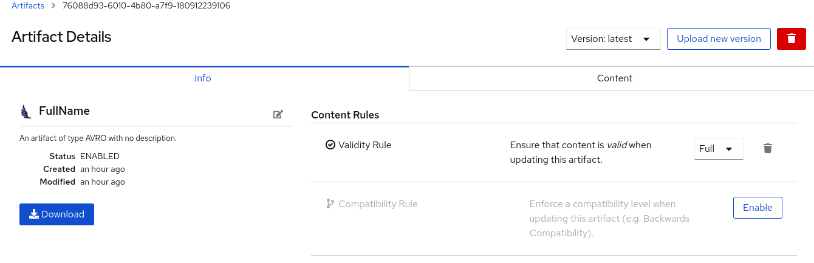
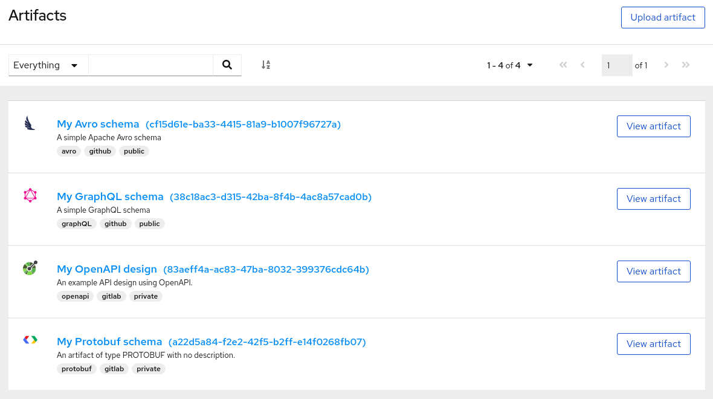
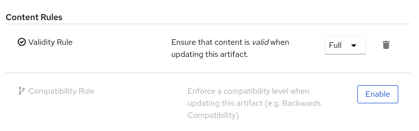

Managing artifacts stored in Apicurio Registry
This chapter explains how to manage artifacts stored in the registry using the Apicurio Registry web console. This chapter also explains other approaches to managing artifacts, which include using the registry REST API commands, Maven plug-in, or a Java client application:
Adding artifacts using the Apicurio Registry web console
You can use the Apicurio Registry web console to upload event schema and API design artifacts to the registry. For more details on the artifact types that you can upload, see [registry-artifact-types]. This section shows simple examples of uploading Apicurio Registry artifacts, applying artifact rules, and adding new artifact versions.
-
Apicurio Registry must be installed and running in your environment. For details, see [installing-the-registry].
-
Connect to the Apicurio Registry web console on:
http://MY_REGISTRY_URL/ui -
Click Upload Artifact, and specify the following:
-
ID: Use the default empty setting to automatically generate an ID, or enter a specific artifact ID.
-
Type: Use the default Auto-Detect setting to automatically detect the artifact type, or select the artifact type from the drop-down, for example, Avro Schema or OpenAPI.
The Apicurio Registry server can automatically detect most artifact types, but not all. -
Artifact: Drag and drop or click Browse to upload a file, for example,
my-schema.jsonormy-openapi.json.
-
-
Click Upload and view the Artifact Details:

Figure 1. Artifact Details in Apicurio Registry web console-
Info: Displays the artifact name, description, lifecycle status, when created, and last modified. You can click the Edit Artifact Metadata pencil icon to edit the artifact name and description or add labels, and click Download to download the artifact file. Also displays artifact Content Rules that you can enable and configure.
-
Documentation (OpenAPI only): Displays automatically-generated REST API documentation.
-
Content: Displays a read-only view of the full artifact content.
-
-
In Content Rules, click Enable to configure a Validity Rule or Compatibility Rule, and select the appropriate rule configuration from the drop-down. For more details, see [registry-rule-types].
-
Click Upload new version to add a new artifact version, and drag and drop or click Browse to upload the file, for example,
my-schema.jsonormy-openapi.json. -
To delete an artifact, click the trash icon next to Upload new version.
Deleting an artifact deletes the artifact and all of its versions, and cannot be undone. Artifact versions are immutable and cannot be deleted individually.
Viewing artifacts using the Apicurio Registry web console
You can use the Apicurio Registry web console to browse the event schema and API design artifacts stored in the registry. This section shows simple examples of viewing Apicurio Registry artifacts, versions, and artifact rules. For more details on the artifact types stored in the registry, see [registry-artifact-types].
-
Apicurio Registry must be installed and running in your environment. For details, see [installing-the-registry].
-
Artifacts must have been added to the registry using the Apicurio Registry web console, REST API commands, Maven plug-in, or a Java client application.
-
Connect to the Apicurio Registry web console on:
http://MY_REGISTRY_URL/ui -
Browse the list of artifacts stored in the registry, or enter a search string to find an artifact. You can select to search by a specific Name, Description, Label, or Everything.

Figure 2. Browse artifacts in Apicurio Registry web console -
Click View artifact to view the Artifact Details:
-
Info: Displays the artifact name, description, lifecycle status, when created, and last modified. You can click the Edit Artifact Metadata pencil icon to edit the artifact name and description or add labels, and click Download to download the artifact file. Also displays artifact Content Rules that you can enable and configure.
-
Documentation (OpenAPI only): Displays automatically-generated REST API documentation.
-
Content: Displays a read-only view of the full artifact content.
-
-
Select to view a different artifact Version from the drop-down, if additional versions have been added.
Configuring content rules using the Apicurio Registry web console
You can use the Apicurio Registry web console to configure optional rules to prevent invalid content from being added to the registry. All configured artifact rules or global rules must pass before a new artifact version can be uploaded to the registry. Configured artifact rules override any configured global rules. For more details, see [registry-rules].
This section shows a simple example of configuring global and artifact rules. For details on the different rule types and associated configuration settings that you can select, see [registry-rule-types].
-
Apicurio Registry must be installed and running in your environment. For details, see [installing-the-registry].
-
For artifact rules, artifacts must have been added to the registry using the Apicurio Registry web console, REST API commands, Maven plug-in, or a Java client application.
-
Connect to the Apicurio Registry web console on:
http://MY_REGISTRY_URL/ui -
For artifact rules, browse the list of artifacts stored in the registry, or enter a search string to find an artifact. You can select to search by a specific artifact Name, Description, Label, or Everything.
-
Click View artifact to view the Artifact Details.
-
In Content Rules, click Enable to configure an artifact Validity Rule or Compatibility Rule, and select the appropriate rule configuration from the drop-down. For more details, see [registry-rule-types].

Figure 3. Configure content rules in Apicurio Registry web console -
For global rules, click the Settings cog icon at the top right of the toolbar, and click Enable to configure a global Validity Rule or Compatibility Rule, and select the appropriate rule configuration from the drop-down. For more details, see [registry-rule-types].
-
To disable an artifact rule or global rule, click the trash icon next to the rule.
Managing artifacts using the Registry REST API
The Registry REST API enables client applications to manage artifacts in the registry, for example, in a CI/CD pipeline deployed in production. This REST API provides create, read, update, and delete operations for artifacts, versions, metadata, and rules stored in the registry. For detailed information, see the Apicurio Registry REST API documentation.
This section shows a simple curl-based example of using the Registry REST API to add and retrieve an Apache Avro schema artifact in the registry.
| When adding artifacts in Apicurio Registry using the REST API, if you do not specify a unique artifact ID, Apicurio Registry generates one automatically as a UUID. |
-
See [registry-rest-api].
-
Apicurio Registry must be installed and running in your environment. For details, see [installing-the-registry].
-
Add an artifact in the registry using the
/artifactsoperation. The following examplecurlcommand adds a simple artifact for a share price application:$ curl -X POST -H "Content-type: application/json; artifactType=AVRO" -H "X-Registry-ArtifactId: share-price" --data '{"type":"record","name":"price","namespace":"com.example","fields":[{"name":"symbol","type":"string"},{"name":"price","type":"string"}]}' http://MY-REGISTRY-HOST/api/artifactsThis example shows adding an Avro schema artifact with an artifact ID of
share-price.MY-REGISTRY-HOSTis the host name on which Apicurio Registry is deployed. For example:http://localhost:8080/api/artifacts. -
Verify that the response includes the expected JSON body to confirm that the artifact was added. For example:
{"createdOn":1578310374517,"modifiedOn":1578310374517,"id":"share-price","version":1,"type":"AVRO","globalId":8} -
Retrieve the artifact from the registry using its artifact ID. For example, in this case the specified ID is
share-price:$ curl https://MY-REGISTRY-URL/api/artifacts/share-price '{"type":"record","name":"price","namespace":"com.example","fields":[{"name":"symbol","type":"string"},{"name":"price","type":"string"}]}
-
For more REST API sample requests, see the Registry REST API documentation.
Managing artifacts using the Apicurio Registry Maven plug-in
Apicurio Registry provides a Maven plug-in to enable you to upload or download registry artifacts as part of your development build. For example, this plug-in is useful for testing and validating that your schema updates are compatible with client applications.
-
Apicurio Registry must be installed and running in your environment
-
Maven must be installed and configured in your environment
-
Update your Maven
pom.xmlfile to use theapicurio-registry-maven-pluginto upload an artifact. The following example shows registering an Apache Avro schema artifact:<plugin> <groupId>io.apicurio</groupId> <artifactId>apicurio-registry-maven-plugin</artifactId> <version>${registry.version}</version> <executions> <execution> <phase>generate-sources</phase> <goals> <goal>register</goal> (1) </goals> <configuration> <registryUrl>https://my-cluster-service-registry-myproject.example.com/api</registryUrl> (2) <artifactType>AVRO</artifactType> <artifacts> <schema1>${project.basedir}/schemas/schema1.avsc</schema1> (3) </artifacts> </configuration> </execution> </executions> </plugin>1 Specify registeras the execution goal to upload an artifact to the registry.2 You must specify the Apicurio Registry URL. 3 You can upload multiple artifacts using the artifact ID and location. -
You can also update your Maven
pom.xmlfile to download a previously registered artifact:<plugin> <groupId>io.apicurio</groupId> <artifactId>apicurio-registry-maven-plugin</artifactId> <version>${registry.version}</version> <executions> <execution> <phase>generate-sources</phase> <goals> <goal>download</goal> (1) </goals> <configuration> <registryUrl>https://my-cluster-service-registry-myproject.example.com/api</registryUrl> (2) <ids> <param1>schema1</param1> (3) </ids> <outputDirectory>${project.build.directory}</outputDirectory> </configuration> </execution> </executions> </plugin>1 Specify downloadas the execution goal.2 You must specify the Apicurio Registry URL. 3 You can download multiple artifacts to a specified directory using the artifact ID.
-
For more details on the Maven plug-in, see https://github.com/Apicurio/apicurio-registry-demo.
Managing artifacts using a Java client application
You can also manage artifacts in the registry using a Java client application. The Apicurio Registry Java client classes enable you to create, read, update, or delete artifacts in the registry.
-
See [client-serde]
-
You must have implemented a client application in Java that imports the Apicurio Registry client classes:
io.apicurio.registry.client.RegistryClient -
Apicurio Registry must be installed and running in your environment
-
Update your client application to add a new artifact in the registry. The following example shows adding an Apache Avro schema artifact from a Kafka producer client application:
String registryUrl_node1 = PropertiesUtil.property(clientProperties, "registry.url.node1", "https://my-cluster-service-registry-myproject.example.com/api"); (1) try (RegistryService service = RegistryClient.create(registryUrl_node1)) { String artifactId = ApplicationImpl.INPUT_TOPIC + "-value"; try { service.getArtifactMetaData(artifactId); (2) } catch (WebApplicationException e) { CompletionStage < ArtifactMetaData > csa = service.createArtifact( (3) ArtifactType.AVRO, artifactId, new ByteArrayInputStream(LogInput.SCHEMA$.toString().getBytes()) ); csa.toCompletableFuture().get(); } }1 Configure the client application with the Apicurio Registry URL in the client properties. You can create properties for more than one registry node. 2 Check to see if the schema artifact already exists in the registry based on the artifact ID. 3 Add the new schema artifact in the registry.
-
For an example Java client application, see https://github.com/Apicurio/apicurio-registry-demo.